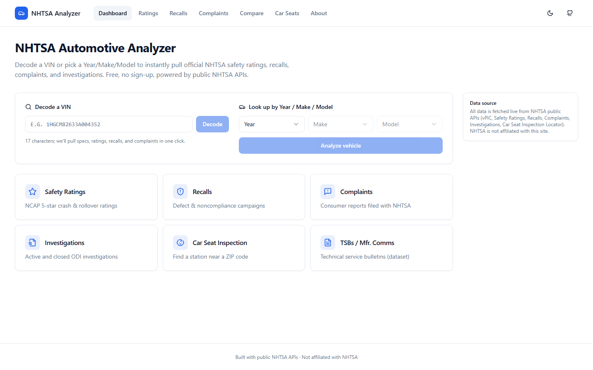
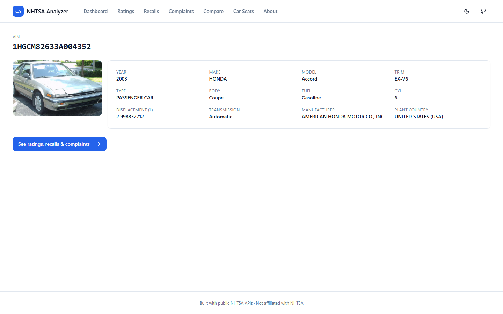
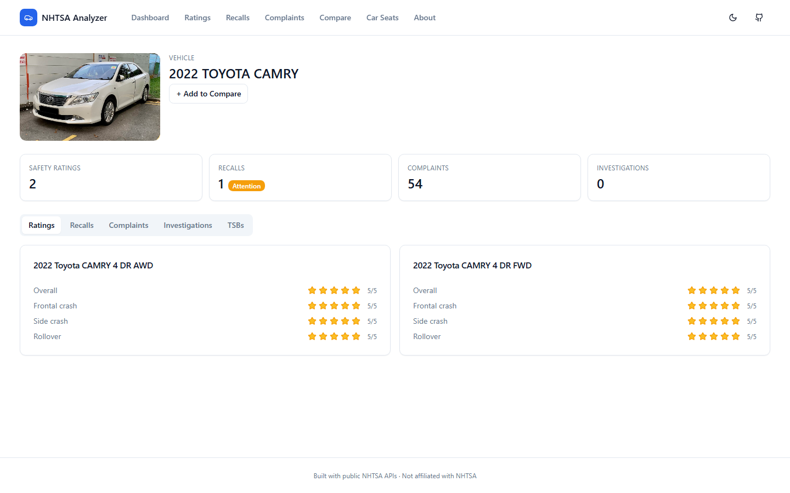
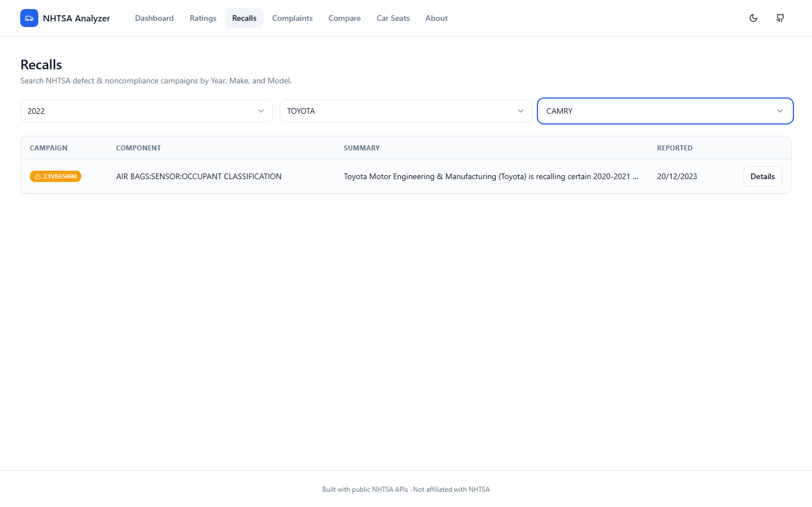
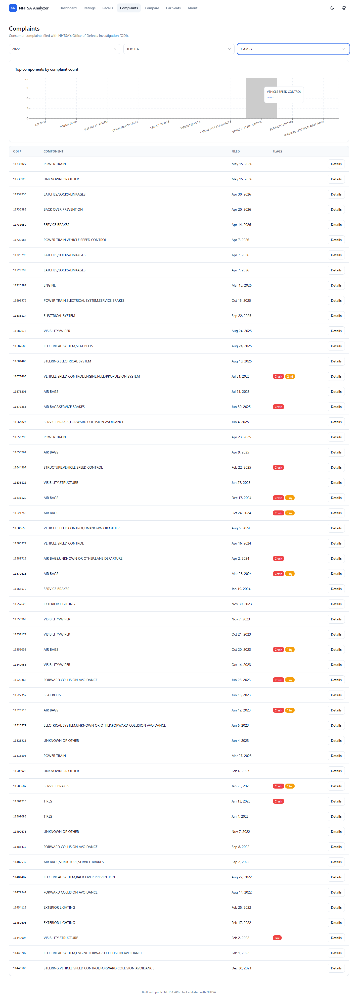
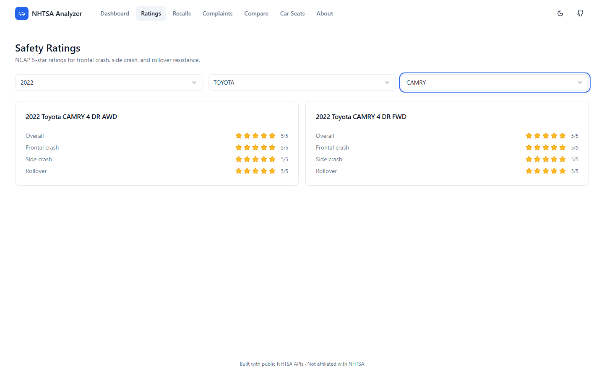
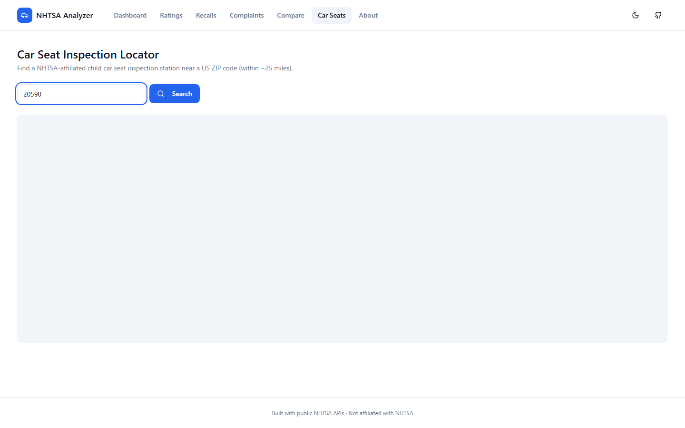
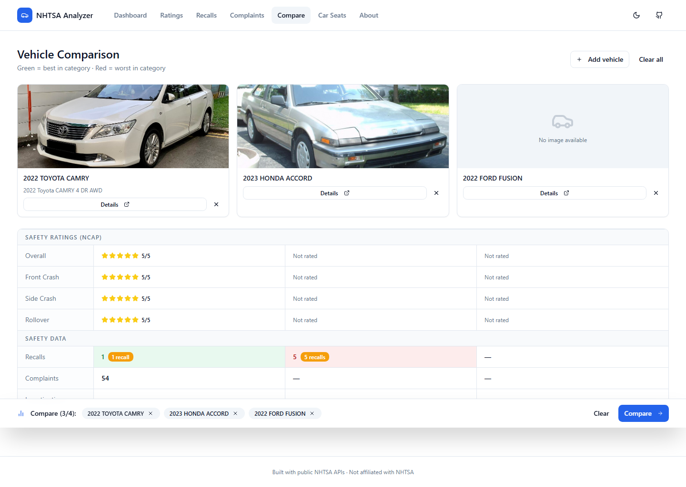
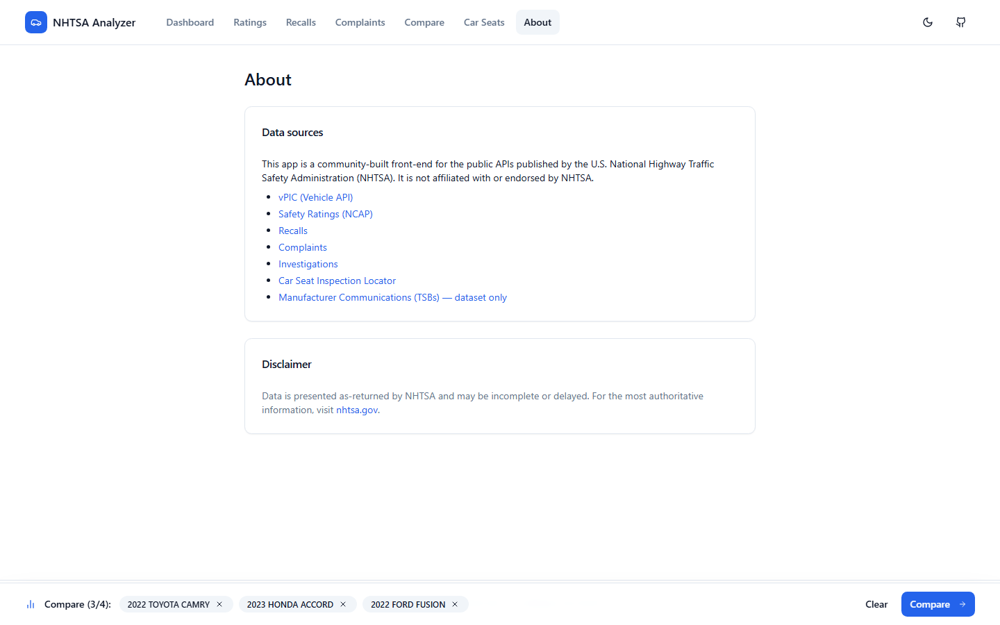

A complete walkthrough of how the NHTSA Automotive Analyzer — a production-quality web app with 6 live government APIs, interactive maps, charts, vehicle images, and a compare feature — was built from an empty folder using only natural language prompts.
In February 2025, AI researcher Andrej Karpathy posted about a new way he was building software. He called it "vibe coding" — the idea that you describe what you want in plain English, and an AI agent writes the code. Not just a snippet. The entire application.
"There's a new kind of coding I call 'vibe coding', where you fully give in to the vibes, embrace exponentials, and forget that the code even exists."
— Andrej Karpathy, February 2025If you've used ChatGPT to help debug a function or write a regex, you've already seen AI-assisted coding. Vibe coding is a step beyond that. Instead of asking for code snippets you paste into your editor, you're working with an AI agent that can read files, write files, install dependencies, run commands, browse documentation URLs, and fix its own mistakes — all without you touching the keyboard beyond typing prompts in plain English.
| Capability | ChatGPT / Copy-paste | Vibe Coding (Agent Mode) |
|---|---|---|
| Generates code | ✓ Yes | ✓ Yes |
| Reads your existing files | ✗ You paste them manually | ✓ Automatically |
| Writes files to disk | ✗ You copy-paste | ✓ Directly |
| Installs npm packages | ✗ You run the commands | ✓ Runs npm install |
| Fetches live documentation URLs | ✗ Training data only | ✓ Browses the actual page |
| Fixes its own errors | ✗ You copy the error back | ✓ Catches TypeScript errors mid-build |
| Spans multiple files | ✗ One file at a time | ✓ Edits 40+ files in one pass |
The key mental shift: you're not asking for code. You're describing outcomes. The agent figures out the implementation.
The National Highway Traffic Safety Administration (NHTSA) publishes a suite of public APIs at nhtsa.gov — covering vehicle recalls, consumer complaints, safety crash-test ratings, VIN decoding, and more. All free, no API key required.
The goal: build a modern, useful web app that makes all of that data accessible in one place. Here's what was built — with zero code written by hand:
| API | Used for | Key? |
|---|---|---|
NHTSA vPIC vpic.nhtsa.dot.gov/api |
VIN decoding, year/make/model lookups | None |
NHTSA Recalls api.nhtsa.gov/recalls |
Recall lookup by year/make/model | None |
NHTSA Complaints api.nhtsa.gov/complaints |
Consumer complaints by vehicle | None |
NHTSA NCAP Ratings api.nhtsa.gov/SafetyRatings |
Crash-test star ratings by vehicle | None |
NHTSA Car Seat Locator api.nhtsa.gov/CSSea |
Technician station locations by ZIP | None |
Wikipedia MediaWiki en.wikipedia.org/w/api.php |
Vehicle photos (no key, public API) | None |
One of the things that makes vibe coding accessible is how little setup is required. You need three pieces of software and one subscription:
node -v in a terminal.C:\repos\nhtsa), then open it in VS Code with File → Open Folder. This is the agent's workspace.This is the most important thing to get right before you start. GitHub Copilot has multiple modes. You want Agent Mode, not Ask mode or Edit mode.
Ask mode gives you answers and code snippets — but you still copy-paste them yourself. Edit mode edits a single file at a time. Agent Mode is what enables the AI to read and write multiple files, run terminal commands, install packages, and fetch URLs all on its own. Without Agent Mode, you're not vibe coding — you're just getting AI suggestions.
You may have heard of MCP (Model Context Protocol) — a standard for connecting AI agents to external tools like databases, APIs, or services. For this project, no MCP servers were needed. The agent's built-in ability to browse URLs, read/write files, and run terminal commands was sufficient to build the entire application.
MCP servers become useful when you want your AI agent to connect to something specific — like your company's database, a private API, or a specialized tool. For a project that works entirely with public HTTP APIs, the agent's built-in web access is enough.
When prompted to "research the APIs and determine the next steps," the agent evaluated options and proposed a stack. These are the technologies it chose — none were specified in the prompt:
All of these are industry-standard, production-quality libraries. The only direction given was "modern" and "useful." The rest was the agent's judgment call.
Here is the complete sequence of events — from empty folder to running application. The entire foundation was built with two prompts. Feature additions each took one prompt. Bug fixes each took one prompt.
The first prompt was sent with the empty folder open in VS Code. No files existed yet. The goal was to get the agent to read the actual NHTSA documentation rather than guess from its training data:
I want to utilize all of the useful APIs from NHTSA website at https://www.nhtsa.gov/nhtsa-datasets-and-apis and build an automotive analyzer app in typescript and react on node.js. Research the apis and determine the next steps. I want it to look modern and I want it to be useful for anyone who uses it.
Notice what this prompt does not include: no file names, no component structure, no database schema, no design system. Just the URL, the technology preference (TypeScript + React), and two quality bars ("modern" and "useful").
The agent fetched https://www.nhtsa.gov/nhtsa-datasets-and-apis, read the actual documentation, identified 6 usable public APIs (vPIC, NCAP Ratings, Recalls, Complaints, Investigations, Car Seat Locator), and then asked 4 clarifying questions before writing a single line of code:
Giving the agent a URL to read — rather than describing the API from memory — means it works from accurate, current documentation. AI training data can be months or years old; fetching the live page means you get accurate endpoint names, parameter names, and response structures.
After the clarifying Q&A, the agent had written a full implementation plan. This is the moment where traditional coding would begin a multi-day sprint. In vibe coding, you send two words:
Start implementation.
Approximately 40 files were created or written. This included:
package.json, vite.config.ts, tsconfig.json, PostCSS config, Tailwind configThe agent also ran npm install automatically and fixed 2 TypeScript type errors that appeared during compilation — without any additional prompting.
Once the base app was running, additional features were added by describing what the user should experience. Two major features were added this way:
is there any way to consistently display an image of the vehicle selected?
The agent evaluated available free image sources (Google requires a key, Bing requires a key), chose the Wikipedia MediaWiki API as the most reliable no-key option, then built an entire image pipeline: a vehicleImage.ts module with filename-scoring to avoid returning irrelevant images, a VehicleImage React component with a loading skeleton and car-icon fallback for when no image exists, and added it to both the VIN result page and the vehicle hub page.
i would like to add a compare feature so you can select multiple cars and show all of the values for each car to compare them
A complete compare system was built from scratch:
compare.ts) — max 4 vehicles, survives page refreshCompareContext.tsx) — add/remove/clear/isInCompare throughout the appCompareBar.tsx) — shows selected vehicles with a "Compare →" buttonComparePage.tsx) — side-by-side NCAP ratings with green/red highlights for best/worst per categoryNotice that neither feature prompt mentioned React Context, localStorage, component architecture, or routing. Those are implementation details. The prompts described what the user experiences. The agent chose the architecture. This is the core of vibe coding — you own the outcome, the AI owns the implementation.
Vibe coding does not mean everything works perfectly on the first pass. You will encounter errors. The good news: fixing them follows the same principle as building — describe the problem precisely, and the agent fixes it. Here are the three types of errors that appeared in this build and exactly how each was handled:
After the initial build, this appeared in the Vite terminal output:
[vite:css] @import must precede all other statements (besides @charset or empty @layer) 55 | 56 | /* MapLibre styles */ 57 | @import 'maplibre-gl/dist/maplibre-gl.css';
[vite:css] @import must precede all other statements (besides @charset or empty @layer)
CSS requires all @import rules to appear before any other rules including @tailwind directives. The agent moved the MapLibre import to the top of src/index.css. One-file, one-line fix.
(!) Some chunks are larger than 500 kB after minification. dist/assets/index-DxvSvOUt.js 1,655.20 kB │ gzip: 470.37 kB Consider using dynamic import() to code-split the application
[pasted the full warning block above]
All 10 pages were being bundled into a single JavaScript file. The agent converted every page component to React.lazy() with Suspense wrappers, and added manualChunks to vite.config.ts to split MapLibre GL, Recharts, React, TanStack Query, and Radix UI into separate vendor bundles. Initial load dropped from ~470 KB → ~80 KB gzipped.
Unexpected Application Error!
Button is not defined
ReferenceError: Button is not defined
at VehicleHubPage (http://localhost:5173/src/pages/VehicleHubPage.tsx:85:11)
[pasted the full error above]
The Button component was used in VehicleHubPage.tsx but the import statement was missing. The agent added import { Button } from '@/components/ui/button';. One-line fix.
The make dropdown on the Recalls page was showing entries like "#1 Alpine Customs" and "!NSPIRE MOTORWERKS" instead of mainstream brands like Honda, Toyota, and Ford.
the screen says lookup by year/make/model but when selecting the make it should say things like Honda, Hyundai, Ford, Toyota, etc but it shows this instead [screenshot attached]
NHTSA's GetAllMakes endpoint returns every registered manufacturer — approximately 12,000 entries including custom shops and low-volume specialty builders. The agent switched to the recall products API (/products/vehicle/makes?modelYear={year}&issueType=r), which returns only mainstream consumer brands scoped to the selected model year.
now it's showing "No image available" on each one I search
NHTSA's API returns make and model names in ALL CAPS: HYUNDAI, PALISADE. Wikipedia article titles use Title Case: Hyundai Palisade. The previous make-dropdown fix had introduced a code path that no longer normalized the casing before constructing the Wikipedia search query. The agent added a toTitleCase() conversion step in the image lookup function. One-function fix, images restored.
Never paraphrase an error message — always paste it verbatim. The terminal output, the browser stack trace, and the build warning are already precise machine-readable descriptions of what went wrong. Summarizing them removes the exact information the agent needs. For visual bugs, attach a screenshot instead of trying to describe the layout in words.
These are real screenshots of the running application, captured via Playwright after the build was complete. Click any screenshot to zoom in.









After walking through the complete build, a few patterns stand out as the difference between a vibe coding session that works and one that stalls:
| Pattern | Do this | Not this |
|---|---|---|
| Research first | Give the agent a URL and ask it to read the docs | Describe the API from memory |
| Let the AI plan | Let it ask clarifying questions and write a plan | Jump straight to implementation |
| Paste errors verbatim | Copy the full terminal or browser output | Summarize or paraphrase what went wrong |
| Screenshot visual bugs | Attach a screenshot; describe expected vs. actual | Try to describe layout in text |
| Describe outcomes, not code | "I'd like a compare feature where users can select multiple cars" | "Create a useState array and a Context provider that..." |
| Report regressions immediately | Note when a fix breaks something new, right away | Accept the regression and move on |
| Ask if it's possible first | "Is there any way to display vehicle images?" | Assume something either is or isn't possible |
The results above are real. The app is running, the APIs are live, and zero code was hand-written. But it's worth being clear about what the experience actually requires:
You still need to think. Crafting a clear, research-backed first prompt took more time than typing it. Recognizing that the make dropdown was wrong — and knowing how to describe it — required looking at the output critically. Vibe coding shifts the effort from writing syntax to thinking clearly about what you want.
The agent can make mistakes. It can build the wrong thing, miss an edge case, or introduce a regression. Your job is to test, observe, and describe what went wrong. The debugging mindset — "something is wrong, let me figure out what" — still applies. You just describe the symptom instead of writing the fix.
This project worked well because the NHTSA APIs are public, well-documented, and the requirements were clear. Projects with private APIs, complex business logic, or strict data models require more precise prompting and more iteration. The approach scales, but the prompt quality matters more as complexity grows.
Understanding what TypeScript is, what React does, what an API call is — that context makes your prompts better. You don't need to know how to write a React Context from scratch. But knowing what one is for ("sharing state across components without prop drilling") helps you ask for the right thing.
The real value of vibe coding isn't that it's easier. It's that it's faster by an order of magnitude. A project that would have taken a developer 3–5 days was done in an afternoon. That unlocks things that weren't practical before: testing an idea in hours instead of weeks, building tools for yourself that would never have been worth the time investment, or exploring APIs and data you wouldn't have touched without a low-friction way to build around them.
node -v.Some public data sources that work well for this kind of project: NHTSA (automotive) · OpenFDA (drug recalls, adverse events) · Weather.gov (US forecasts) · Congress.gov (legislation) · GTFS Realtime (public transit) · NASA Open Data (meteorites, imagery)
The training guide that was built alongside this project is available in this same folder as vibe-coding-guide.html — it goes deeper on the exact prompt patterns and step-by-step workflow for this specific build.